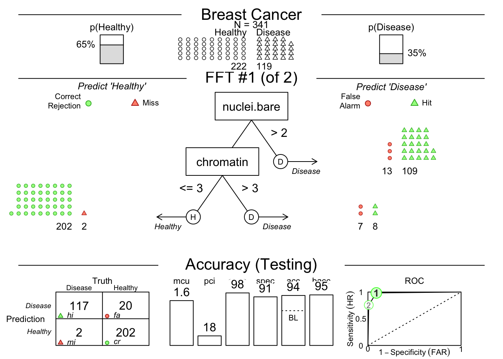

Chapter 29 Tree Based Models
Tree-based models are one of the earliest forms of machine learning, which have some specific advantages over traditional linear or logistic regression models. As a general rule, tree-based models handle interactions between independent predictor variables well, while traditional models struggle with interactions. This can be helpful in biology and medicine where things like cations and electrochemical balance have inevitable interactions. Tree-based models use a series of binary splits to create a tree structure that predicts the outcome. The tree is built by selecting the best split at each node, based on the predictor variables. The tree is grown until a stopping criterion is met, such as a minimum number of cases in a node, or a maximum depth of the tree. Each split is optimized to create a more pure ‘branch’ of one outcome. The tree is then pruned to avoid overfitting, and the final tree is used to make predictions on new data. The original tree-based models were CART (Classification and Regression Trees) models, which were developed by Breiman et al. in the 1980s. The CART algorithm is a recursive partitioning algorithm that creates binary splits in the data to create a tree structure. The tree is grown until a stopping criterion is met, such as a minimum number of cases in a node, or a maximum depth of the tree. The tree is then pruned to avoid overfitting, and the final tree is used to make predictions on new data. We have since developed more complicated tree-based models, like random Forests, which start with a random subset of predictor variables and begin partitioning the observations. This uses the entirety of the information more completely than a single tree. A single tree is often not very accurate, but a forest of trees, called a random forest, can be very accurate. Random forests are an ensemble method that creates many trees, each on a random subset of the data, and averages the predictions of the trees to create a more accurate prediction. Random forests are one of the most accurate machine learning algorithms available, and are widely used in biology and medicine. The advantage of a single tree is its transparency. You can see where and what the splitting nodes are, and gain a better understanding of the reasons for the outcome. These are also referred to as ‘white box’ models, as opposed to ‘black box’ models like neural networks and random Forests, which are difficult to interpret. These are also easier to use in clinical practice. In order to get the best of both worlds, we can use a fast and frugal tree model, which is a simple tree model that is easy to interpret and use in clinical practice. The {FFTrees} package makes the fftrees algorithm easy to use in R.
We will work through 3 example datasets and show the use of the FFTrees package to create a simple tree model. We will use the FFTrees package to create a simple tree model to diagnose breast cancer from a digitized biopsy slide, to identify heart disease in at-risk people, and to predict survival in tuberculosis in the strep_tb trial.
29.1 Setup
- Install the “FFTrees” package from CRAN.
- Load this package with
library(FFTrees). - Load the “medicaldata” package with
library(medicaldata).
29.2 The Breast Cancer Dataset
This dataset is from the UCI Machine Learning Repository, and each observation comes from a digitized image of a fine needle aspirate (FNA) of a breast mass.
The dataset contains 569 observations and 32 variables, including the diagnosis of breast cancer (malignant or benign) and 30 features that are computed from a digitized image of the FNA.
The features describe characteristics of the cell nuclei present in the image.
The dataset is available in the {FFTrees} package as breast_cancer, and details can be found at: breast_cancer-FNA.
An edge detection algorithm was used to identify the edges of the nuclei, and from these borders, cell and nuclear features were derived, including:
diagnosis - TRUE (cancer) or FALSE (not cancer)
thickness - thickness of clumps (1-10)
cellsize.unif - uniformity of cell size (1-10)
cellshape.unif - uniformity of cell shape (1-10)
adhesion - a score for how much cells are adherent to each other (1-10)
epithelial - a score for how much epithelium is present (1-10)
nuclei.bare - a score for how many bare nuclei (without cytoplasm or cell membrane) are found (1-10)
chromatin - a score for presence of bland chromatin (1-10)
nucleoli - a score for presence of normal nucleoli (1-10)
mitoses - a score for presence of mitoses (1-10)
- Make predictions about future cases (patients) with their measured predictors on this continuous outcome.
Load the data into RStudio by copying and running the code below.
29.2.1 Data Inspection
You can inspect the breastcancer data in the data Viewer by going to the Environment pane and clicking on it to open the dataset.
Take a look, and get a rough sense of which variables (with high scores) are associated with a TRUE diagnosis of breast cancer.
In the data Viewer, you can click on the variable diagnosis to sort observations to look at the predictor variable values for TRUE and FALSE cases.
Clicking on the diagnosis variable again will sort the observations in the reverse order.
29.3 Building a FFTrees Model for Breast Cancer
We will build a simple tree model to predict the diagnosis of breast cancer from the features of the cell nuclei.
Let’s walk through the code block below, which builds a tree model using the FFTrees function from the FFTrees package.
- We will name the resulting model
breast.fft, and use the assignment arrow to make this happen. - We will use the
FFTreesfunction to build the model. - We will specify the first argument as the formula for the model, which is
diagnosis ~ ., meaning we will predict the diagnosis from all other variables in the dataset. - We will specify the second argument as the data, which is
breastcancer. - We will specify the
train.pargument as 0.5, which means we will randomly use half of the data to train the model and half to test the model. - We will specify the
mainargument as “Breast Cancer”, which will be the title of the plot. - We will specify the
decision.labelsargument asc("Healthy", "Disease"), which will be the labels for the outcome variable in the plot. This works because the underlying value for FALSE is 0, and the underlying value for TRUE is 1, so that these are in the correct order.
seed <- 123
# the seed is used to get reproducible outcomes, as the random split into train and test will give slightly different results each time.
# note we are not using the cost argument - we will use the default for this.
breast.fft <- FFTrees(formula = diagnosis ~ .,
data = breastcancer,
train.p = 0.5,
main = "Breast Cancer",
decision.labels = c("Healthy", "Disease"))Now copy this code block and run it in your local RStudio instance.
This should rank the predictor variables (cues), train some FFT models on the training data, rank them by their performance on the test data, and give you a short printout. You should also see a new assigned object, breast.fft in your Environment pane. To see the fft object, copy and run the code below:
## Breast Cancer
## FFTrees
## - Trees: 6 fast-and-frugal trees predicting diagnosis
## - Cost of outcomes: hi = 0, fa = 1, mi = 1, cr = 0
##
## FFT #1: Definition
## [1] If cellsize.unif <= 2, decide Healthy.
## [2] If cellshape.unif > 2, decide Disease, otherwise, decide Healthy.
##
## FFT #1: Training Accuracy
## Training data: N = 342, Pos (+) = 120 (35%)
##
## | | True + | True - | Totals:
## |----------|--------|--------|
## | Decide + | hi 114 | fa 8 | 122
## | Decide - | mi 6 | cr 214 | 220
## |----------|--------|--------|
## Totals: 120 222 N = 342
##
## acc = 95.9% ppv = 93.4% npv = 97.3%
## bacc = 95.7% sens = 95.0% spec = 96.4%
##
## FFT #1: Training Speed, Frugality, and Cost
## mcu = 1.39, pci = 0.85, cost_dec = 0.041This prints out the (default) assigned cost of 1 for false positives (fa for false alarm) and false negatives (mi for miss), the definition of the best tree model (with 2 nodes or branch points), the best tree model’s performance on the training data, and some accuracy statistics.
Now let’s plot how this model does on the test data. Copy and run the code below:
 You may need to click the Zoom button at the top left of your Plots pane to get a good view.
You may need to click the Zoom button at the top left of your Plots pane to get a good view.
This shows us that among the 341 randomly selected test cases (342 used for training), only 35% had TRUE breast cancer. Then it shows model 1, which has 2 nodes, splitting on uniformity of cell size below 3, and uniformity of cell shape below 3. You can see how each split ‘purifies’ the outcomes - never perfectly, but pretty well. There is a confusion matrix at the lower left to show us false negatives and false positives - also known as hits, misses, false alarms, and correct rejections. The model has a sensitivity of 0.95, specificity of 0.95, and accuracy of 0.95. The bacc variable is balanced accuracy, which is sens * 0.5 + spec * 0.5. The mcu is mean cues used per observation, and pci is percent of cues ignored. There is an ROC curve at the lower right comparing the model to alternative types of model, including CART, logistic regression, random forest, and support vector machine models. They are all quite good, and sensitivity and specificity are well balanced.
In some cases, sensitivity and specificity are not well balanced. You may place a greater negative value on missed diagnoses, and want to shift the model to be more sensitive. You can do this by changing the cost of a miss (mi) to be higher than the cost of a false alarm (fa). You can do this by changing the cost argument in the FFTrees function. For example, you could set cost = c(fa = 1, mi = 2). This would mean that a missed diagnosis is twice as costly as a false alarm. You can also change the cost of a false alarm by setting fa = 2 and mi = 1. This would mean that a false alarm is twice as costly as a missed diagnosis. It depends on the clinical situation and your judgement, but you should think about the relative cost of these two types of errors and adjust the cost argument if needed.
You can see the accuracy of each predictor by plotting these with the code below:
## Plotting cue training statistics:
## — Cue accuracies ranked by bacc
You can see that predictor (cue) #9 is not great. You can print these out with:
## cue class threshold direction n hi fa mi
## 1 thickness integer 4 > 342 105 46 15
## 2 cellsize.unif integer 2 > 342 115 17 5
## 3 cellshape.unif integer 2 > 342 118 23 2
## 4 adhesion integer 1 > 342 110 40 10
## 5 epithelial integer 2 > 342 108 19 12
## 6 nuclei.bare numeric 3 > 342 104 12 16
## 7 chromatin integer 3 > 342 98 9 22
## 8 nucleoli integer 2 > 342 99 7 21
## 9 mitoses integer 1 > 342 53 8 67
## cr sens spec ppv npv acc
## 1 176 0.8750000 0.7927928 0.6953642 0.9214660 0.8216374
## 2 205 0.9583333 0.9234234 0.8712121 0.9761905 0.9356725
## 3 199 0.9833333 0.8963964 0.8368794 0.9900498 0.9269006
## 4 182 0.9166667 0.8198198 0.7333333 0.9479167 0.8538012
## 5 203 0.9000000 0.9144144 0.8503937 0.9441860 0.9093567
## 6 210 0.8666667 0.9459459 0.8965517 0.9292035 0.9181287
## 7 213 0.8166667 0.9594595 0.9158879 0.9063830 0.9093567
## 8 215 0.8250000 0.9684685 0.9339623 0.9110169 0.9181287
## 9 214 0.4416667 0.9639640 0.8688525 0.7615658 0.7807018
## bacc wacc dprime cost_dec cost
## 1 0.8338964 0.8338964 1.956674 -0.17836257 -0.17836257
## 2 0.9408784 0.9408784 3.132595 -0.06432749 -0.06432749
## 3 0.9398649 0.9398649 3.338330 -0.07309942 -0.07309942
## 4 0.8682432 0.8682432 2.283749 -0.14619883 -0.14619883
## 5 0.9072072 0.9072072 2.634671 -0.09064327 -0.09064327
## 6 0.9063063 0.9063063 2.701420 -0.08187135 -0.08187135
## 7 0.8880631 0.8880631 2.630512 -0.09064327 -0.09064327
## 8 0.8967342 0.8967342 2.773471 -0.08187135 -0.08187135
## 9 0.7028153 0.7028153 1.639510 -0.21929825 -0.21929825
## cost_cue
## 1 0
## 2 0
## 3 0
## 4 0
## 5 0
## 6 0
## 7 0
## 8 0
## 9 0And see that counting mitoses (#9) is not a great use of your pathologist’s time. Several of these potential predictors are just not that useful, compared to size and shape uniformity.
You can see the best model in text (words) with:
## [1] "If cellsize.unif <= 2, decide Healthy."
## [2] "If cellshape.unif > 2, decide Disease, otherwise, decide Healthy."which gives you a simple decision algorithm. If you want to see the accuracy for all of the trees generated, you can use
## # A tibble: 6 × 20
## tree n hi fa mi cr sens spec far
## <int> <int> <int> <int> <int> <int> <dbl> <dbl> <dbl>
## 1 1 341 108 12 11 210 0.908 0.946 0.0541
## 2 2 341 116 35 3 187 0.975 0.842 0.158
## 3 3 341 100 9 19 213 0.840 0.959 0.0405
## 4 4 341 117 48 2 174 0.983 0.784 0.216
## 5 5 341 119 52 0 170 1 0.766 0.234
## 6 6 341 82 4 37 218 0.689 0.982 0.0180
## # ℹ 11 more variables: ppv <dbl>, npv <dbl>, dprime <dbl>,
## # acc <dbl>, bacc <dbl>, wacc <dbl>, cost_dec <dbl>,
## # cost_cue <dbl>, cost <dbl>, pci <dbl>, mcu <dbl>You can see the definitions of all trees with:
## # A tibble: 6 × 7
## tree nodes classes cues directions thresholds exits
## <int> <int> <chr> <chr> <chr> <chr> <chr>
## 1 1 2 i;i cellsize.… >;> 2;2 0;0.5
## 2 2 2 i;i cellsize.… >;> 2;2 1;0.5
## 3 3 3 i;i;i cellsize.… >;>;> 2;2;2 0;0;…
## 4 4 3 i;i;i cellsize.… >;>;> 2;2;2 1;1;…
## 5 5 4 i;i;i;n cellsize.… >;>;>;> 2;2;2;3 1;1;…
## 6 6 4 i;i;i;n cellsize.… >;>;>;> 2;2;2;3 0;0;…You can also predict the outcome for new data from the best training tree with:
## ✔ Applied 6 FFTs to 'test' data.## ✔ Generated predictions for tree 1.## # A tibble: 10 × 2
## prob_0 prob_1
## <dbl> <dbl>
## 1 0.972 0.0283
## 2 0.0726 0.927
## 3 0.972 0.0283
## 4 0.0726 0.927
## 5 0.972 0.0283
## 6 0.0726 0.927
## 7 0.972 0.0283
## 8 0.972 0.0283
## 9 0.972 0.0283
## 10 0.972 0.0283This gives you the probability of FALSE (no cancre) and TRUE (cancer) for the first 10 observations in the dataset. You can also use type = "class" to get the predicted class (FALSE or TRUE) for each observation, or use type = “both” if you want to see both.
You can also manually control which predictors go into the model.
For example, you could use only bare nuclei and bland chromatin predictors with the code below:
breast.fft <- FFTrees(formula = diagnosis ~ nuclei.bare + chromatin,
data = breastcancer,
train.p = 0.5,
main = "Breast Cancer",
decision.labels = c("Healthy", "Disease"))
plot(breast.fft, data = "test")
Or you can manually specify a model with the example code below:
breast.fft <- FFTrees(diagnosis ~ .,
data = breastcancer,
my.tree = "If thickness > 6, predict TRUE. If chromatin >3, predict TRUE. Otherwise, predict FALSE.")
plot(breast.fft, data = "test")## Error in verify_tree_arg(x = x, data = data, tree = tree): You asked for 'test' data, but there are no 'test' data. Consider using data = 'train' instead...